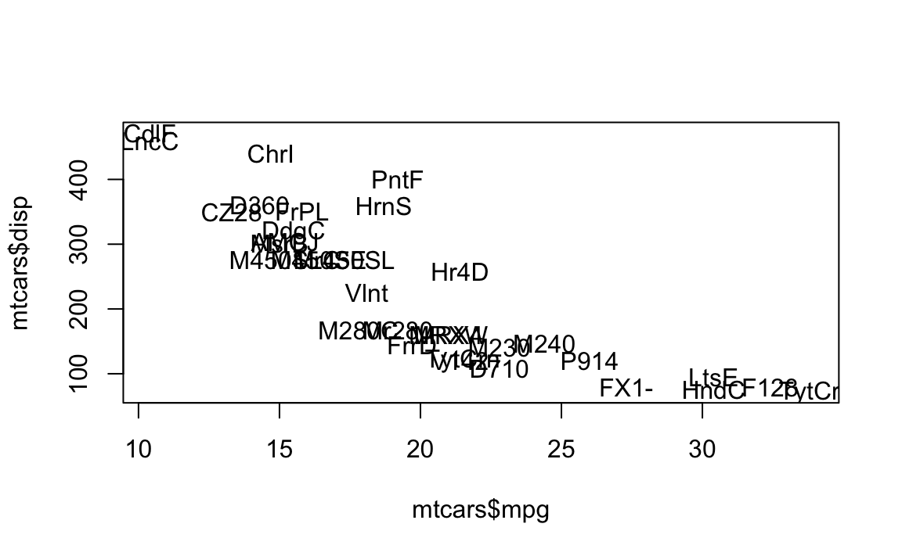

15 Strings
Now that we’ve seen vectors and factors, let’s spend some time talking about character data, also referred to as “strings” in the programming world.
Most of the material in this chapter is borrowed from Gaston Sanchez’s book Handling Strings in R (with permission from the author).
15.1 Text Everywhere
At its heart, computing involves working with numbers. That’s the main reason why computers were invented: to facilitate mathematical operations around numbers; from basic arithmetic to more complex operations (e.g. trigonometry, algebra, calculus, etc.) Nowadays, however, we use computers to work with data that are not just numbers. We use them to write a variety of documents, we use them to create and edit images and videos, to manipulate sound, among many other tasks.
Today, there is a considerable amount of information and data in the form of text. Look at any website: pretty much the contents are text and images, with some videos here and there, and maybe some tables and/or a list of numbers.
Likewise, most of the times you are going to be working with text files: script files, reports, data files, source code files, etc. All the R script files that you use are essentially plain text files. I bet you have a csv file or any other field delimited format (or even in HTML, XML, JSON, etc), with some fields containing characters. In all of these cases what you are working with is essentially a bunch of characters.
15.2 Character Strings in R
In R, a piece of text is represented as a sequence of characters (letters,
numbers, and symbols). The data type R provides for storing sequences of
characters is character. Formally, the mode of an object that holds character
strings in R is "character".
You express character strings by surrounding text within double quotes:
or you can also surround text within single quotes:
The important thing is that you must match the type of quotes that your are using. A starting double quote must have an ending double quote. Likewise, a string with an opening single quote must be closed with a single quote.
Typing characters in R like in above examples is not very useful. Typically, you are going to create objects or variables containing some strings. For example, you can create a variable string that stores some string:
Notice that when you print a character object, R displays it using double quotes (regardless of whether the string was created using single or double quotes). This allows you to quickly identify when an object contains character values.
When writing strings, you can insert single quotes in a string with double quotes, and vice versa:
# single quotes within double quotes
ex1 <- "The 'R' project for statistical computing"
# double quotes within single quotes
ex2 <- 'The "R" project for statistical computing'However, you cannot directly insert single quotes in a string with single quotes, neither you can insert double quotes in a string with double quotes (Don’t do this!):
In both cases R will give you an error due to the unexpected presence of either a double quote within double quotes, or a single quote within single quotes.
If you really want to include a double quote as part of the string, you need to
escape the double quote using a backslash \ before it:
15.2.1 Empty String
The most basic type of string is the empty string produced by consecutive
quotation marks: "". Technically, "" is a string with no characters in it,
hence the name “empty string”:
15.2.2 Empty Character Vector
Another basic string structure is the empty character vector produced by the
function character() and its argument length = 0:
# empty character vector
empty_chr <- character(0)
empty_chr
#> character(0)
# class
class(empty_chr)
#> [1] "character"It is important not to confuse the empty character vector character(0) with the
empty string ""; one of the main differences between them is that they have
different lengths:
# length of empty string
length(empty_str)
#> [1] 1
# length of empty character vector
length(empty_chr)
#> [1] 0Notice that the empty string empty_str has length 1, while the empty
character vector empty_chr has length 0.
Related to character() R provides two related functions: as.character() and
is.character(). These two functions are methods for coercing objects to type
"character", and testing whether an R object is of type "character". For
instance, let’s define two objects a and b as follows:
To test if a and b are of type "character" use the function
is.character():
The function as.character() is a coercing method. For better or worse, R
allows you to convert (i.e. coerce) non-character objects into character
strings with the function as.character():
15.2.3 The workhorse function paste()
The function paste() is perhaps one of the most important functions that you
can use to create and build strings. paste() takes one or more R objects,
converts them to "character", and then it concatenates (pastes) them to form
one or several character strings. Its usage has the following form:
paste(..., sep = " ", collapse = NULL)The argument ... means that it takes any number of objects. The argument sep
is a character string that is used as a separator. The argument collapse is an
optional string to indicate if you want all the terms to be collapsed into a
single string. Here is a simple example with paste():
As you can see, the default separator is a blank space (sep = " "). But you
can select another character, for example sep = "-":
If you give paste() objects of different length, then it will apply a
recycling rule. For example, if you paste a single character "X" with the
sequence 1:5, and separator sep = ".", this is what you get:
# paste with objects of different lengths
paste("X", 1:5, sep = ".")
#> [1] "X.1" "X.2" "X.3" "X.4" "X.5"To see the effect of the collapse argument, let’s compare the difference with collapsing and without it:
# paste with collapsing
paste(1:3, c("!","?","+"), sep = '', collapse = "")
#> [1] "1!2?3+"
# paste without collapsing
paste(1:3, c("!","?","+"), sep = '')
#> [1] "1!" "2?" "3+"One of the potential problems with paste() is that it coerces missing values
NA into the character "NA":
# with missing values NA
evalue <- paste("the value of 'e' is", exp(1), NA)
evalue
#> [1] "the value of 'e' is 2.71828182845905 NA"In addition to paste(), there’s also the function paste0() which is a
wrapper of paste() equivalent to:
paste(..., sep = "", collapse)15.3 Basic Manipulations
Besides creating and printing strings, there are a number of very handy
functions in R for doing some basic manipulation of strings. In this chapter
we will review the following functions:
| Function | Description |
|---|---|
nchar() |
number of characters |
tolower() |
convert to lower case |
toupper() |
convert to upper case |
casefold() |
case folding |
chartr() |
character translation |
abbreviate() |
abbreviation |
substring() |
substrings of a character vector |
substr() |
substrings of a character vector |
15.3.1 Counting characters
One of the main functions for manipulating character strings is nchar()
which counts the number of characters in a string. In other words, nchar()
provides the length of a string:
# how many characters?
nchar(c("How", "many", "characters?"))
#> [1] 3 4 11
# how many characters?
nchar("How many characters?")
#> [1] 20Notice that the white spaces between words in the second example are also counted as characters.
It is important not to confuse nchar() with length(). While the former
gives us the number of characters, the later only gives the number of
elements in a vector.
15.3.2 Casefolding
R comes with three functions for text casefolding.
tolower()toupper()casefold()
The function tolower() converts any upper case characters into lower case:
# to lower case
tolower(c("aLL ChaRacterS in LoweR caSe", "ABCDE"))
#> [1] "all characters in lower case" "abcde"The opposite function of tolower() is toupper. As you may guess, this
function converts any lower case characters into upper case:
# to upper case
toupper(c("All ChaRacterS in Upper Case", "abcde"))
#> [1] "ALL CHARACTERS IN UPPER CASE" "ABCDE"The third function for case-folding is casefold() which is a wrapper for both tolower() and toupper(). Its uasge has the following form:
casefold(x, upper = FALSE)By default, casefold() converts all characters to lower case, but you can
use the argument upper = TRUE to indicate the opposite (characters in upper
case):
# lower case folding
casefold("aLL ChaRacterS in LoweR caSe")
#> [1] "all characters in lower case"
# upper case folding
casefold("All ChaRacterS in Upper Case", upper = TRUE)
#> [1] "ALL CHARACTERS IN UPPER CASE"I’ve found the case-folding functions to be very helpful when I write functions
that take a character input which may be specified in lower or upper case, or
perhaps as a mix of both cases. For instance, consider the function
temp_convert() that takes a temperature value in Fahrenheit degress, and
a character string indicating the name of the scale to be converted.
temp_convert <- function(deg = 1, to = "celsius") {
switch(to,
"celsius" = (deg - 32) * (5/9),
"kelvin" = (deg + 459.67) * (5/9),
"reaumur" = (deg - 32) * (4/9),
"rankine" = deg + 459.67)
}Here is how you call temp_convert() to convert 10 Fahrenheit degrees into
celsius degrees:
temp_convert() works fine when the argument to = 'celsius'. But what
happens if you try temp_convert(30, 'Celsius') or
temp_convert(30, 'CELSIUS')?
To have a more flexible function temp_convert() you can apply tolower()
to the argument to, and in this way guarantee that the provided string by
the user is always in lower case:
temp_convert <- function(deg = 1, to = "celsius") {
switch(tolower(to),
"celsius" = (deg - 32) * (5/9),
"kelvin" = (deg + 459.67) * (5/9),
"reaumur" = (deg - 32) * (4/9),
"rankine" = deg + 459.67)
}Now all the following three calls are equivalent:
15.3.3 Translating characters
There’s also the function chartr() which stands for character translation. chartr() takes three arguments: an old string, a new string, and a
character vector x:
chartr(old, new, x)The way chartr() works is by replacing the characters in old that appear
in x by those indicated in new. For example, suppose we want to translate
the letter "a" (lower case) with "A" (upper case) in the sentence
"This is a boring string":
It is important to note that old and new must have the same number of
characters, otherwise you will get a nasty error message like this one:
# incorrect use
chartr("ai", "X", "This is a bad example")
#> Error in chartr("ai", "X", "This is a bad example"): 'old' is longer than 'new'Here’s a more interesting example with old = "aei" and new = "\#!?".
This implies that any 'a' in 'x' will be replaced by '\#', any 'e' in
'x' will be replaced by '?', and any 'i' in 'x' will be replaced by
'?':
15.3.4 Abbreviating strings
Another useful function for basic manipulation of character strings is
abbreviate(). Its usage has the following structure:
abbreviate(names.org, minlength = 4, dot = FALSE, strict = FALSE,
method = c("left.keep", "both.sides"))Although there are several arguments, the main parameter is the character
vector (names.org) which will contain the names that we want to abbreviate:
# some color names
some_colors <- colors()[1:4]
some_colors
#> [1] "white" "aliceblue" "antiquewhite" "antiquewhite1"
# abbreviate (default usage)
colors1 <- abbreviate(some_colors)
colors1
#> white aliceblue antiquewhite antiquewhite1
#> "whit" "alcb" "antq" "ant1"
# abbreviate with 'minlength'
colors2 <- abbreviate(some_colors, minlength = 5)
colors2
#> white aliceblue antiquewhite antiquewhite1
#> "white" "alcbl" "antqw" "antq1"
# abbreviate
colors3 <- abbreviate(some_colors, minlength = 3, method = "both.sides")
colors3
#> white aliceblue antiquewhite antiquewhite1
#> "wht" "alc" "ant" "an1"A common use for abbreviate() is when plotting names of objects or variables
in a graphic. I will use the built-in data set mtcars to show you a simple
example with a scatterplot between variables mpg and disp

The names of the cars are all over the plot. In this situation you may want to
consider using abbreviate() to shrink the names of the cars and produce a
less “crowded” plot:
plot(mtcars$mpg, mtcars$disp, type = "n")
text(mtcars$mpg, mtcars$disp, abbreviate(rownames(mtcars)))
15.3.5 Replacing strings
One common operation when working with strings is the extraction and
replacement of some characters. There a various ways in which characters can
be replaced. If the replacement is based on the positions that characters
occupy in the string, you can use the functions substr() and substring()
substr() extracts or replaces substrings in a character vector. Its usage has
the following form:
substr(x, start, stop)x is a character vector, start indicates the first element to be replaced,
and stop indicates the last element to be replaced:
# extract 'bcd'
substr("abcdef", 2, 4)
#> [1] "bcd"
# replace 2nd letter with hash symbol
x <- c("may", "the", "force", "be", "with", "you")
substr(x, 2, 2) <- "#"
x
#> [1] "m#y" "t#e" "f#rce" "b#" "w#th" "y#u"
# replace 2nd and 3rd letters with happy face
y = c("may", "the", "force", "be", "with", "you")
substr(y, 2, 3) <- ":)"
y
#> [1] "m:)" "t:)" "f:)ce" "b:" "w:)h" "y:)"
# replacement with recycling
z <- c("may", "the", "force", "be", "with", "you")
substr(z, 2, 3) <- c("#", "```")
z
#> [1] "m#y" "t``" "f#rce" "b`" "w#th" "y``"Closely related to substr() is the function substring() which extracts or
replaces substrings in a character vector. Its usage has the following form:
substring(text, first, last = 1000000L)text is a character vector, first indicates the first element to be
replaced, and last indicates the last element to be replaced:
# same as 'substr'
substring("ABCDEF", 2, 4)
#> [1] "BCD"
substr("ABCDEF", 2, 4)
#> [1] "BCD"
# extract each letter
substring("ABCDEF", 1:6, 1:6)
#> [1] "A" "B" "C" "D" "E" "F"
# multiple replacement with recycling
text6 <- c("more", "emotions", "are", "better", "than", "less")
substring(text6, 1:3) <- c(" ", "zzz")
text6
#> [1] " ore" "ezzzions" "ar " "zzzter" "t an" "lezz"15.4 Exercises
The following exercises are based on the row names of data frame USArrests
(this data comes already in R).
# a few rows of USArrests
head(USArrests)
#> Murder Assault UrbanPop Rape
#> Alabama 13.2 236 58 21.2
#> Alaska 10.0 263 48 44.5
#> Arizona 8.1 294 80 31.0
#> Arkansas 8.8 190 50 19.5
#> California 9.0 276 91 40.6
#> Colorado 7.9 204 78 38.7For convenience reasons, let’s create a character vector states containing
the row names of USArrests:
states <- rownames(USArrests)
head(states)
#> [1] "Alabama" "Alaska" "Arizona" "Arkansas" "California"
#> [6] "Colorado"Here are some functions that you may need to use in order to answer the exercises listed below.
nchar()tolower()toupper()casefold()paste()paste0()substr()
1) Use nchar() on states to get the number of characters of each
state.
2) There are 3 functions to do case-folding: tolower(), toupper(), and
casefold(). Apply each function on states to see what happens.
3) Use paste() to form a new vector with the first five states and their
number of characters like this:
"Alabama = 7" "Alaska = 6" "Arizona = 7" "Arkansas = 8" "California = 10"4) Take the first five states, and find out how to use paste()’s argument
collapse, in order to get the following output:
"AlabamaAlaskaArizonaArkansasCalifornia"5) Use substr() on states to shorten the state names using the first
3-letters, e.g. "Ala" "Ala" "Ari" "Ark" ...
6) How would you shorten the state names using the first letter and the
last 3-letters? For instance: "Aama" "Aska" "Aona" "Asas" ...?
7) How would you extract those elements in states that have four
characters: e.g. "Iowa" "Ohio" "Utah"?
8) How would you those elements in states that have ten characters:
e.g. "California" "New Jersey" "New Mexico" "Washington"?
9) Imagine that you need to generate the names of 10 data CSV files. All
the files have the same prefix name but each of them has a different number:
file1.csv, file2.csv, … , file10.csv. How can you use paste() and
paste0() to generate a character vector with these names in R?
10) Consider the following vector letrs which contains various letters randomly generated:
# random vector of letters
set.seed(1)
letrs <- sample(letters, size = 100, replace = TRUE)
head(letrs)
#> [1] "y" "d" "g" "a" "b" "w"Write code in R to count the number of vowels in vector
letrs. Hint: see binary operator%in%(help documentation?"%in%").Write code in R to count the number of consonants in vector
letrs. Hint: see binary operator%in%(help documentation?"%in%").